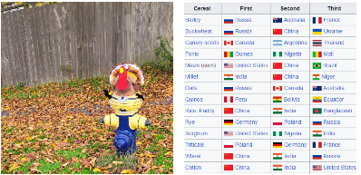

if I give you two photos, can you tell me how they differ?
Yes, I can help you with that. Please upload the two photos you want to compare, and I'll analyze them to identify the differences.

Here are the two photos
You've uploaded two images that are quite different from each other in content:
- The first image appears to be a playful decoration of a fire hydrant, which has been painted and adorned to resemble a figure, possibly for a festive occasion. The fire hydrant is yellow and blue, with what looks like a Thanksgiving turkey decoration on top, including a face, feathers, and a pilgrim hat. The background shows a wooden fence and fallen autumn leaves, indicating the photo might have been taken in a residential area during the fall season.
- The second image is a chart showing the leading global producers of various cereals and cotton, with countries ranked first, second, and third. It is a structured table with flags representing the countries and the names of the products such as barley, buckwheat, and maize, among others.
These images differ in several key aspects:
- Content: One is a photograph with a seasonal theme, and the other is an informative chart.
- Purpose: The first image serves an aesthetic or decorative purpose, while the second provides data and information.
- Composition: The photograph has organic shapes and natural colors, while the chart has a rigid structure and uses flags and text to convey information.
- Context: One is likely taken from a community or personal setting (fire hydrant decoration), and the other is from an educational or informational context (agricultural production data).
If you need a more detailed analysis or comparison based on specific aspects, feel free to ask!